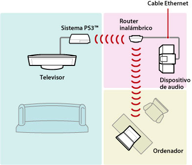
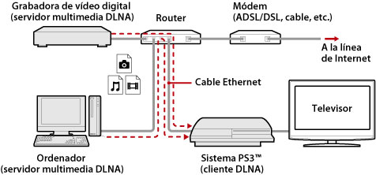
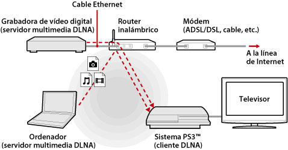
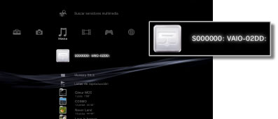
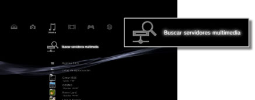

Ajustes > Ajustes de red > Conexión al servidor multimedia
Conexión al servidor multimedia
Configure los ajustes para realizar la conexión a dispositivos compatibles con DLNA.
| Activar | Permite la conexión a dispositivos que admiten DLNA. |
|---|---|
| Desactivar | No permite la conexión a dispositivos que admiten DLNA. |
Acerca de DLNA
DLNA (Digital Living Network Alliance) es un estándar que permite a los dispositivos digitales como, por ejemplo, ordenadores, cámaras de vídeo digitales y televisores, conectarse a una red y compartir datos que se encuentren en otros dispositivos conectados, compatibles con DLNA.
Los dispositivos compatibles con DLNA tienen dos funciones diferentes. Los "servidores" distribuyen medios como, por ejemplo, archivos de imagen, música o vídeo, mientras que los "clientes" los reciben y los reproducen. Algunos dispositivos llevan a cabo ambas funciones. Si utiliza el sistema PS3™ como un cliente, podrá visualizar imágenes o reproducir archivos de música o vídeo almacenados en un dispositivo con funciones de servidor multimedia DLNA a través de una red.

Conexión del sistema PS3™ y el servidor multimedia DLNA
Conecte el sistema PS3™ y el servidor multimedia DLNA mediante una conexión por cable o inalámbrica.
Ejemplo de conexión a un ordenador mediante una conexión por cable

Ejemplo de conexión a un ordenador mediante una conexión inalámbrica

Configuración de un servidor multimedia DLNA
Configure el servidor DLNA de modo que el sistema PS3™ pueda utilizarlo. Es posible utilizar los siguientes dispositivos en servidores multimedia DLNA.
- Dispositivos compatibles con el estándar DLNA, inclusive productos de otras empresas que no sean Sony.
- Ordenadores (PC) con Windows Media Player 11 instalado
Cuando utilice un dispositivo AV como servidor multimedia DLNA
Active la función de servidor multimedia DLNA del dispositivo conectado para permitir que su contenido esté disponible para el acceso compartido. El método de configuración varía en función del dispositivo conectado. Si desea obtener más información, consulte las instrucciones suministradas con el dispositivo.
Si utiliza un ordenador Microsoft Windows como servidor multimedia DLNA
Los ordenadores Microsoft Windows pueden utilizarse como servidores multimedia DLNA mediante la utilización de las funciones de Windows Media Player 11.
1. |
Inicie Windows Media Player 11. |
|---|---|
2. |
Seleccione [Uso compartido de multimedia] del menú [Biblioteca]. |
3. |
Seleccione [Compartir mi multimedia]. |
4. |
Seleccione los dispositivos con los que desea compartir datos de la lista de dispositivos situada en la casilla de verificación [Compartir mi multimedia] y, a continuación, seleccione [Permitir]. |
5. |
Seleccione [OK]. |
Notas
- Windows Media Player 11 no está instalado de manera predeterminada en los ordenadores Microsoft Windows. Descargue el instalador del sitio Web de Microsoft para instalar Windows Media Player 11.
- Si desea obtener más información sobre cómo utilizar Windows Media Player 11, consulte la función de ayuda de dicho programa.
- En algunos casos es posible instalar en el ordenador software de servidor multimedia DLNA original. Si desea obtener más información, consulte las instrucciones suministradas con el equipo.
Reproducción de contenido del servidor multimedia DLNA
Al encender el sistema PS3™, los servidores multimedia DLNA ubicados en la misma red se detectarán automáticamente y los iconos correspondientes a los servidores detectados se mostrarán en  (Foto),
(Foto),  (Música) y
(Música) y  (Vídeo).
(Vídeo).
1. |
Seleccione el icono del servidor multimedia DLNA al que desee conectarse en  |
|---|---|
2. |
Seleccione el archivo que desee reproducir. |
Notas
- El sistema PS3™ debe estar conectado a una red. Para obtener información acerca de los ajustes de red, consulte
 (Ajustes) >
(Ajustes) >  (Ajustes de red) > [Ajustes de conexión a Internet] en esta guía.
(Ajustes de red) > [Ajustes de conexión a Internet] en esta guía. - Si se ha modificado el método de asignación de direcciones IP de AutoIP a DHCP en los ajustes de entorno de red, realice otra búsqueda de servidores en
 (Buscar servidores multimedia).
(Buscar servidores multimedia). - El icono del servidor multimedia DLNA sólo se mostrará cuando [Conexión al servidor multimedia] se encuentre activado en (Ajustes) > (Ajustes de red).
- Los nombres de las carpetas que se visualizan varían en función del servidor multimedia DLNA.
- Según el servidor multimedia DLNA utilizado, es posible que no se puedan reproducir algunos archivos o que se restrinjan las operaciones durante la reproducción.
- No es posible reproducir contenido protegido por derechos de autor.
- Es posible que los nombres de archivo de los datos almacenados en los servidores que no son compatibles con DLNA presenten un asterisco después del nombre de archivo. En determinados casos, estos archivos no pueden reproducirse en el sistema PS3™. Asimismo, aunque los archivos puedan reproducirse en el sistema PS3™, es posible que no se puedan reproducir en otros dispositivos.
- Es posible que se le solicite la conexión al sistema (serie CECH-4200 o posterior) mediante un cable HDMI para reproducir contenido de vídeo.
Búsqueda manual de servidores multimedia DLNA
Puede iniciar una búsqueda de servidores multimedia DLNA en la misma red. Utilice esta función si no se ha detectado ningún servidor multimedia DLNA con el sistema PS3™ encendido.
Seleccione (Buscar servidores multimedia) en (Foto), (Música) o (Vídeo). Cuando se muestren los resultados de la búsqueda y regrese al menú XMB™, se mostrará una lista con los servidores multimedia DLNA que pueden conectarse.

Nota
(Buscar servidores multimedia) se visualizará únicamente si (Ajustes de red) está activado en [Conexión al servidor multimedia] en (Ajustes).